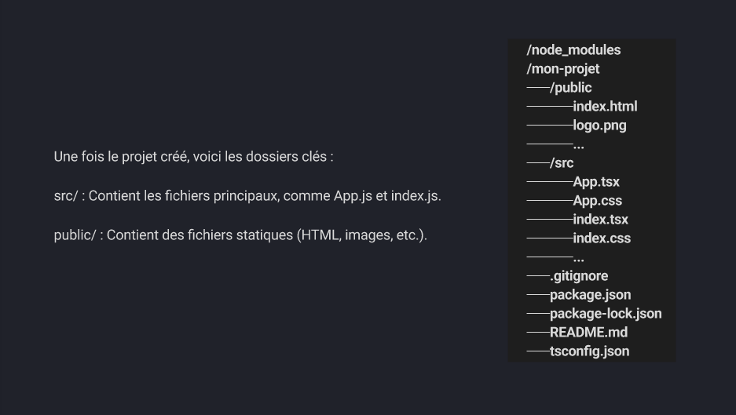

Library(bibliothèque en français) JavaScript (facebook) pour créer des interfaces utilisateurs dynamiques et interactives. Développement de composants réutilisables et gestion efficace de l'état de l'application.
npx create-react-app my-app --template typescript
cd my-app
npm start
Contient des fichiers statiques (html, images, etc..)
Contient les fichiers principaux, comme App.js et index.js
Dans src: créer un dossier components et pages
Dans components on peut placer : Header.tsx, Footer.tsx et Bienvenue.tsx
Dans pages on peut placer Home.tsx et About.tsx
Les composants sont la base de React. Ils permettent de diviser une interface utilisateur en petites parties réutilisables. Un composant est une fonction ou une classe qui retourne une partie de l'interface utilisateur.
Définis par une fonction qui retourne du JSX (JavaScript XML)
Ils sont les plus couramment utilisés en React. Ils sont simples et faciles à comprendre, surtout avec l'introduction des hooks dans React.
Définis par une classe JavaScript. Ces composants utilisent render() pour retourner du JSX
???
Les props sont des arguments passés aux composants, permettant de rendre ceux-ci dynamiques. Ils sont immuables, le composant ne peut pas les modifier.
???
(p.47)